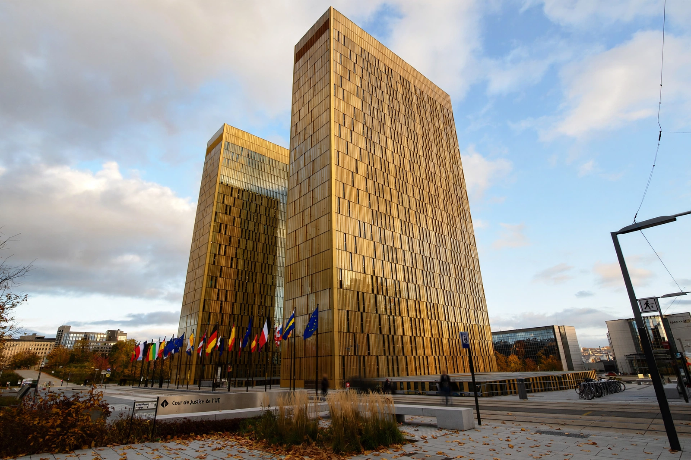

Court of Justice of the European Union

| Established | 1952 |
|---|---|
| Location | Kirchberg, Luxembourg City |
| Composition | Court of Justice (27 judges) and General Court (54 judges) |
| President | Koen Lenaerts (Court of Justice, since 2015) |
The Court of Justice of the European Union (CJEU) is the judicial institution of the European Union. Based in Luxembourg, it comprises two courts: the Court of Justice proper, which deals with references for preliminary rulings from national courts, certain actions for annulment and infringement proceedings, and the General Court, which principally hears direct actions by individuals and companies. Founded in 1952 as the court of the European Coal and Steel Community, the institution's task is to ensure that "in the interpretation and application of the Treaties the law is observed".
Composition and procedure
The Court of Justice consists of one judge from each member state (27), assisted by 11 advocates general who deliver reasoned, non-binding opinions in cases raising new points of law. Judges and advocates general are appointed by common accord of the member states' governments for renewable six-year terms, after the opinion of a panel on candidates' suitability. The Court sits in chambers of three or five judges, in a Grand Chamber of 15 for complex or important cases, or (rarely) as a full court. Deliberations are secret and judgments are given as single collegiate rulings, without dissenting opinions. The working language is French; cases are conducted in the language of the referring court or applicant.
Jurisdiction
The Court's most important procedure is the preliminary reference under Article 267 TFEU, by which national courts ask for interpretations of EU law or rulings on the validity of EU acts; the answers bind the national court and, in practice, courts across the Union. The Commission (or, rarely, a member state) may bring infringement proceedings against a member state that fails to fulfil its obligations, and the Court can impose lump-sum and periodic penalty payments on states that do not comply with a first judgment. The Court also hears annulment actions against EU acts, appeals on points of law from the General Court, and gives opinions on the compatibility of draft international agreements with the treaties.
Landmark case law
Through judgments such as Van Gend en Loos (1963, direct effect) and Costa v ENEL (1964, primacy of EU law), the Court established the constitutional foundations of the European legal order, declaring that the Community constituted "a new legal order of international law" whose rules individuals may invoke before national courts. Other foundational rulings include Cassis de Dijon (1979, mutual recognition in the internal market), Francovich (1991, state liability for breaches of EU law) and Kadi (2008, fundamental-rights review of EU measures implementing UN sanctions).